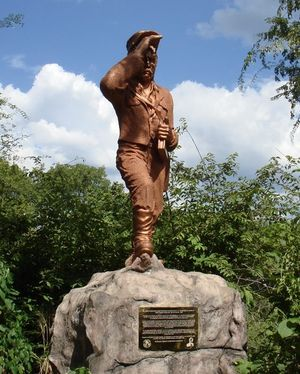
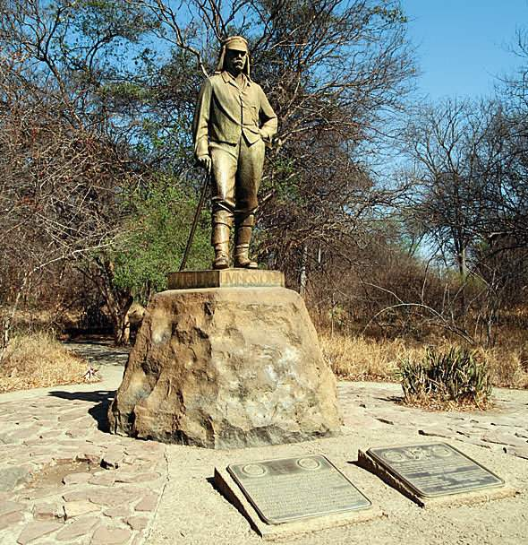
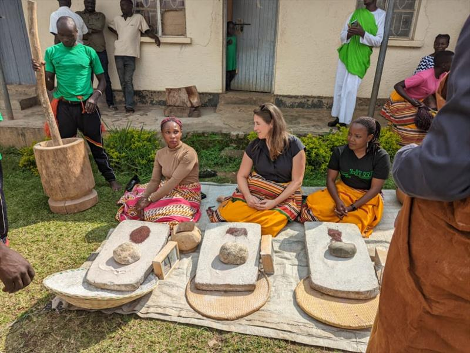
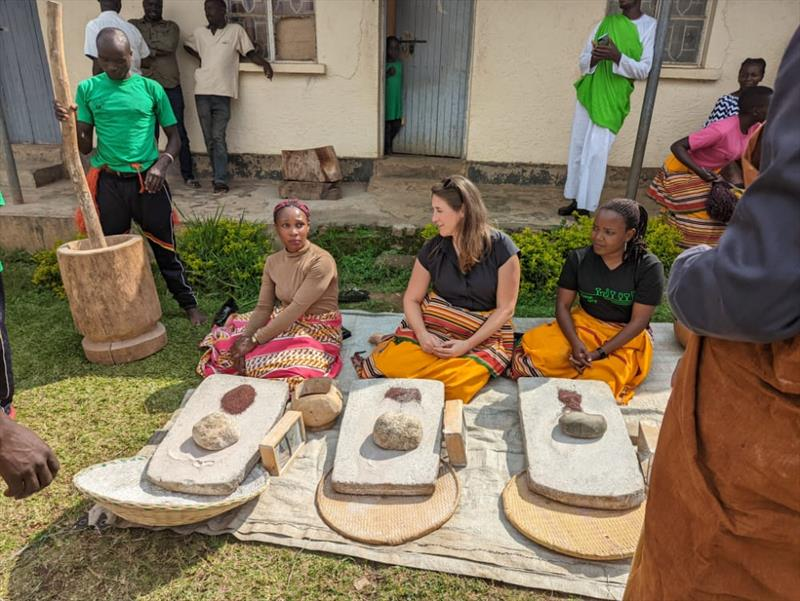
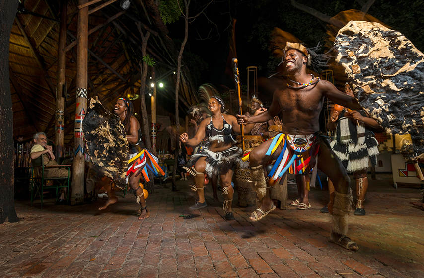
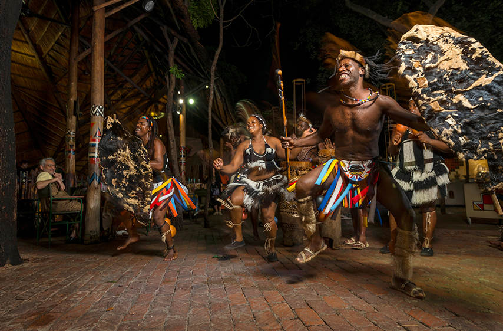

Livingstone & Victoria Falls Experience
Experience the thundering power of "Mosi-oa-Tunya" - The Smoke That Thunders.
Witness one of the Seven Natural Wonders of the World and immerse yourself in authentic African culture through traditional Boma dinner experiences and explore the historic town of Livingstone.
Highlights
- View the magnificent falls from multiple vantage points
- Traditional Boma dinner experiences with African culture
- Historic Livingstone town exploration
- Optional adventure activities (bungee jumping, white water rafting)
- Sunset cruise on the Zambezi River
- Visit to the Devil's Pool (seasonal)
- Rainforest walk
Accommodation Options
New Fairmont Hotel and Casino (Livingstone): US$ 93.00
Victoria Falls Hotel: US$ 178.00
Holiday Inn: US$ 86.00
Terms & Conditions Apply: Most prices are for bed & breakfast. Rates are subject to change based on availability and season. Please contact us for current pricing and availability.
Victoria Falls by Numbers
Width of the falls
Maximum height
Cubic meters per second (peak flow)
Mist visible from distance
Gallery
 


 

Cultural Experience: Learn how millet is traditionally ground by women — an authentic hands-on experience of rural African life.


 

Enjoy a magnificent evening of traditional dance, drumming, and cuisine at the famous Boma Dinner experience.